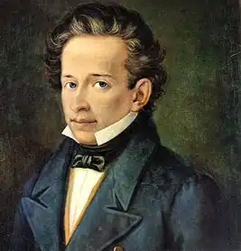
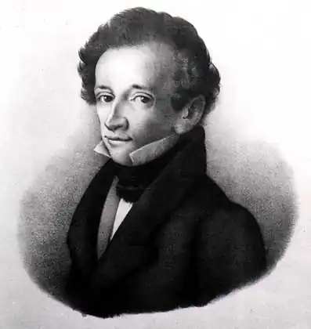
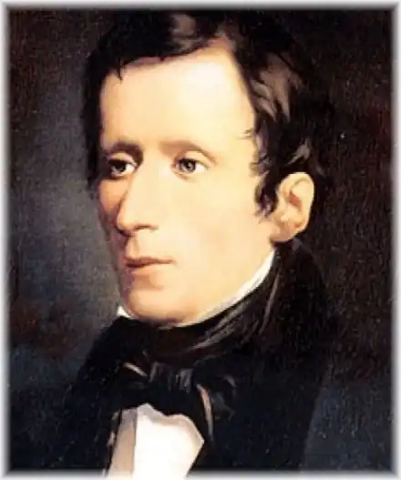

ЛЕОПАРДІ, Джакомо (Leopardi, Giacomo — 29.06. 1798, Реканаті, пров. Мачерата — 14.06.1837, Неаполь) — італійський поет. Народився в аристократичній сім'ї, котра пишалася рідкісною як на ті часи бібліотекою. Здобув домашню освіту, навчався одержимо, у 17 років він уже був сформованим філологом. Літературною працею займався за покликом серця і для заробітку, позаяк збідніла родина графів Леопарді жила у прямому значенні цього слова впроголодь. Крім власних творів, він редагував видання античних авторів, коментував поезію Ф. Петрарки, перекладав з давньогрецької вірші та прозу, давав приватні уроки. Замешкуючи у Реканаті, відвідував Рим, Флоренцію, у 30-х pp. оселився в Неаполі, де карбонарський рух був особливо бурхливим. Але Леопарді не брав участі в політичній боротьбі, він мав слабке здоров'я, поганий зір, до того ж був горбатий, гірко переживав свою приреченість на життя без кохання. Водночас він вирізнявся рідкісною товариськістю, вів широке листування, залишив вагому епістолярну спадщину.
У ранній період творчості, у пору полеміки "класиків і романтиків" у Італії, поет написав естетичний трактат "Міркування італійця про романтичну поезію" (1819, опубл. у 1906), де рішуче виступив на захист класицизму, хоча тоді вже був близький до романтиків, що позначилося і на самому пафосі його полеміки, і на патріотичному настрої, такому характерному для італійської романтичної літератури.
Патріотичного пафосу сповнені його ранні канцони "До Італії" (1818), "До пам'ятника Данте" (1818), "На весілля сестри Паоліни" (1821), що належать до шедеврів італійської громадянської лірики. У канцоні "До Італії" створив образ своєї батьківщини, уособленої в постаті скорботної жінки, — "Італія, цариця і раба", колись могутня держава, "народжена перемагать народи", а нині розорена і розтоптана чужоземними поневолювачами країна. У ліричному герої — риси героїчної самовідданості: "О, дайте мені зброю,// Хай вийду я один на битву// Й поляжу там, та кров моя вогнем // Колишнім запалить відвагу італійців". У канцоні про Данте поет уславлює в авторі "Божественної комедії" передусім громадянина і патріота, в поетиці домінує контраст: шляхетність духу великого поета і гірка доля вигнанця, відштовхнутого гордою Флоренцією. У ранній ліриці Л. гарні й філософські ідилії, серед них найзнаменитіша — "Безконечне" (1819), всього 15 рядків, у яких поет вміщує конкретний пейзаж і безконечність, відчуття безмежності світу в душі поета, відчуття моторошне та солодке: "...Шум вітру чуючи в чагарнику,// Я просторів порівнюю мовчання// З цим голосом.... І любо гинути мені в цім морі" (пер. М. Ореста). У зрілій творчості Леопарді формується його романтичне світовідчуття із потужним вираженням "світової скорботи", в чому він був суголосним із німецьким філософом А. Шопенгауером, англійським поетом Дж. Н.Ґ. Байроном, котрі в цей же час проживали в Італії, але були незнайомими. Світова скорбота висловлена у "Щоденнику роздумів" Леопарді, його морально-філософській ліриці. "Щоденник роздумів" ("Zibaldone") — сповідальна проза поета, де розкривається еволюція його філософських та естетичних поглядів. У ранні роки шанувальник Ж.Ж. Руссо, Леопарді згодом почав віддавати перевагу Вольтерові; від деїзму Вольтера, його антиклерикальних виступів тягнуться нитки до атеїзму Л., що значною мірою визначив його теорію "загального страждання". Головним у переконаннях поета була його впевненість у тому, що світом править первень зла і страждання є долею не обраних, а всіх живих, хоча лише обраним дано усвідомити це і без страху глянути в обличчя трагізму буття. У "Щоденнику роздумів" чимало сторінок присвячено "Іліаді" Гомера, улюбленому творові Леопарді, який дає давньогрецькій поемі романтичне тлумачення, згідно з яким її головним героєм виявляється не переможець Ахілл, а переможений Гектор, патріот, захисник батьківщини. Художній образ, на думку Леопарді, повинен будуватися на контрасті "доблесть-страждання", у цьому сенс і сутність мистецтва, яке повинно пробуджувати в людині внутрішню скорботу, що породжує стоїчний героїзм духу. Світова скорбота була для Леопарді екзистенційним поняттям, в якому крився глибокий моральний зміст: людину робить людиною страждання, воно веде її шляхом пізнання самої себе. Моральною опорою може стати для людини уява, мрія про щастя. І якщо власне щастя неможливе, то принципово можливе бажання щастя, мрія про нього ("Якщо ми не можемо володіти, ніхто не відібрав у нас права бажати"). Відомі слова Ф. де Санктіса у його статті "Шопенгауер і Леопарді": "Леопарді вселяє почуття, протилежні до своїх намірів... Він не вірить у свободу — і примушує любити її; славу, чесноту, любов він називає пустою ілюзією — і при цьому збуджує у твоїх грудях непереборний до них потяг". Морально-філософська лірика Леопарді зрілої пори втілює всі градації та відтінки людської скорботи, від болісного відчаю до світлого смутку:...І серце раптом стиснулось на думку,Що все на світі промине без сліду. Проминув день святочний, а по ньомуБуденний прийде,— все поглине час,—Пригоди й дії людські. Де той голосНародів старожитніх? Де та славаЗвитяжних предків наших, де могутняДержава Римська, де той брязкіт зброї, Що потрясав і землі, й океан?Безмовно скрізь, по всьому світі спокій,—Про все те й згадки аніде немає...("Вечір святочного дня" , тут і далі пер. Г. Кочура)Для поета природа скорботи діалектична: найгіркіший відчай криє в собі надію, найзневіреніше розчарування продовжує зберігати в собі дорогу ілюзію. На думку Леопарді, втіха є навіть у самому стражданні, опоетизоване в його творах "шляхетне страждання", викликане високими почуттями: разом з болем у сучасній свідомості обов'язково народжується "ніжна жалість до себе самого", вміння розуміти чужі страждання, в горі народжується найбільш людське з усіх почуттів — це співчуття. Вірші "Брут-молодший", "Остання пісня Сафо"(обидва в 1822) звернені до античності, але це зовсім не класицистичний храм гармонії, а трагічна античність з богоборчими тенденціями. У "Бруті-молодшому " герой зараховує себе до "дітей Прометея", гордих і непокірних бунтарів. У другому вірші наведено монолог-сповідь великої поетеси Сафо (за переказом, вона кинулася в море через нерозділене кохання), яка дорікає богам за те, що вони дали їй жадання щастя, відібравши саме щастя. У наступних віршах Леопарді ліричний герой наближений до самого автора, його почуття мають дуже особистий і водночас умоглядний характер; поет розмовляє із самим собою, а також з усією космічною безконечністю: "До самого себе"(1833), "Пісня пастуха, який кочує в пустелях Азії" (1830), "Кохання та смерть"(1833), "Дрік, або Квітка в пустелі" (1836). У "Коханні та смерті" відтворені контури міфу в його романтичному осмисленні, спершу ніби йде оповідь про першооснови світу: "Двох сестер в одну й ту ж мить, Кохання й смерть, породила доля... обидві вони прекрасні... й разом звершують свій шлях над смертною стежкою". Спілка прекрасного і трагічного стає темою цього вірша. У "Дрокові" Леопарді створює картину загибелі Помпеїв, зруйнованих виверженням Везувію; поет демонструє безсилля людини перед владою жорстокої стихії. Але цьому похмурому мотиву протистоїть інший — образ духмяного дроку, що виріс на схилах Везувію, це символ беззахисності і безстрашності живої істоти, вірної законам доброти. У "Дрокові" духовний заповіт поета — образ "людського товариства", здатного повстати проти світового зла. Поетика віршів Леопарді незвична для романтизму: стримана напруженість почуття, інтелектуальність, що проявляється в постійному звертанні до умоглядних художніх символів, часті антитези. Сама лексика та синтаксис гранично прості, почасти традиційні, але новою є музична інтонація вірша, нерівноскладового, невпорядкованого, з чергуванням семискладових і одинадцятискладових рядків, з невпорядкованою римою; ритм вірша сповнений дисгармонійних перебоїв, чимало несподіваних внутрішніх рим. Вірш Леопарді до певної міри випереджує форми верлібру XX ст. Сатиричні твори Леопарді писав іншими віршами, в його "Палінодії" (1833) рівноскладовий білий вірш. У "Палінодії" (з грец. — "подвійне відречення") Леопарді звертається до соціальної сатири, він заперечує технічний прогрес як засіб перетворення світу. Матеріальне багатство суспільства, на думку поета, не зробить людину щасливою: ...Одну людину щасною зробитиНе можна, то облишили їїТа й щастя почали для всіх шукати.Це легко, то й знайшли, тепер бажаютьІз багатьох — і злих, і нещасливих —Один щасливий, радісний народ Створити. Дивину цю згодом, мабуть,Роз'яснять нам памфлети та газети,А поки що — у захваті від неїУся цивілізована отара.У "Палінодії" іншим стає і стиль, з'являються побутові слова, наукові терміни, газетні звороти, — все це сприяє колоритній картині "соціального прогресу", який, до речі, ще лиш очікується, а поки існує більше в газетних передовицях, аніж в реальному житті. Єдина поема Леопарді "Параліпомени Батрахоміомахії" ("Paralipomeni della Batracomiomachia", 1837) задумана як варіант давньогрецької іроїкомічної поеми "Війна мишей і жаб": тут суміщені антична і ренесансна традиції, сатирична поема написана октавами, як писалися поеми Л. Пульчі. Предметом сатиричного висміювання є політична боротьба в Італії понаполеонівської епохи, коли більша частина країни опинилася під владою Австрії. Події в "Батрахоміомахії" починаються з моменту, коли мишаче військо, що зазнало поразки, повертається додому. Загинув мишачий цар Салогриз, у Мишатії скорбота і сльози. Все ж миші роблять свою політику, вінчають на царство Хлібогриза, який вважає себе освіченим державцем, він обіцяє кожному мешканцеві Мишатії грамотність. Полководець Скнара збирає військо, аби взяти реванш у новій війні. Зусилля Скнари зазнають фіаско, мишаче військо втікає з поля бою, героїчно б'ється один полководець Скнара і гине. Переможці — жаби та краби — хазяйнують у переможеній країні, запроваджують суворий режим, для чого в країну відправляють досвідченого державця та дипломата барона Кривохода. У країні заборонена грамотність, а кожен, хто бажає навчитися писати, подає особливе прохання. Поема Леопарді — політична сатира, в ній алегоричні постаті: Мишатія — алегорія поневоленої Італії, Скнара — наполеонівський маршал Мюрат, котрий певний час був королем Неаполя, барон Кривохід — барон Меттерніх.